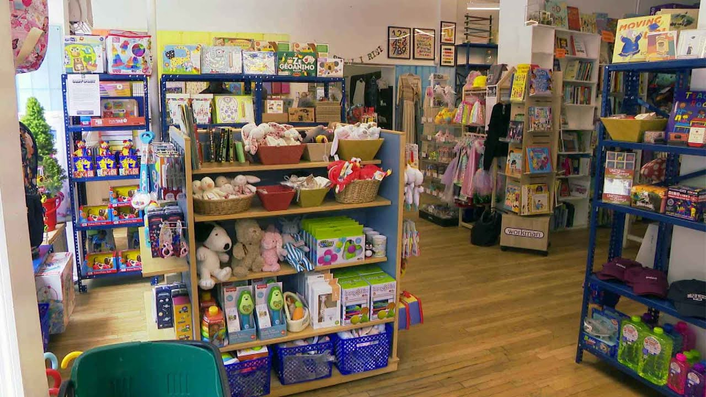

来B站一起耍【Global每日英语简报】
【玩具工厂因特朗普对华关税战停止发货】
Summary: This year's Christmas may see fewer gifts due to Trump's tariffs on Chinese-made toys, causing shipment halts and potential price hikes, leaving shelves empty and parents worried.
摘要： 由于特朗普对中国制造玩具加征关税，今年圣诞节礼物可能减少，导致发货停止和潜在价格上涨，货架空空如也，父母忧心忡忡。

⏱️ Estimated Reading Time: 3 min
Brace yourself.
做好准备。
There might be far fewer presents under the Christmas tree this year.
今年圣诞树下的礼物可能会少得多。
President Trump is telling the nation's families, make do with less.
特朗普总统告诉全国家庭，将就着用更少的。
Maybe the children will have two dolls instead of $30, you know, and maybe the two dolls will cost a couple of bucks more than they would normally.
也许孩子们会有两个娃娃而不是30美元，而且这两个娃娃可能比平时贵几美元。
A whopping 80% of all toys sold in the United States are made in China.
美国销售的玩具中有高达80%是中国制造的。
And with a 145% tariff on imports, toy factories have pretty much halted all shipments.
由于对进口商品征收145%的关税，玩具工厂几乎停止了所有发货。
So these toy shelves could be empty pretty soon.
所以这些玩具货架可能很快就会空空如也。
It's going to be bleak.
这将很惨淡。
It's going to be bleak.
这将很惨淡。
Jennifer Bergman owns Westside Kids in Manhattan.
詹妮弗·伯格曼拥有曼哈顿的Westside Kids。
And she says customers are already panicking.
她说顾客已经开始恐慌。
They're worried about whether or not the they're going to be able to get the toys that they want.
他们担心是否能买到他们想要的玩具。
The kids are going to have lists that they're not going to be able to fulfill.
孩子们将会有无法实现的愿望清单。
Santa's not going to have anywhere to shop.
圣诞老人将无处购物。
Her most popular toy, a scooter that sells right now for $140, could end up costing $400.
她最受欢迎的玩具，一辆现在售价140美元的滑板车，最终可能要花400美元。
And her doll supplier, has already pulled the plug.
她的娃娃供应商已经停止了供应。
This is all I have left.
这是我剩下的全部。
What you see on the shelves, and once these are gone, they're gone.
你在货架上看到的，一旦这些卖完，就没了。
President Trump called into a NewsNation Town Hall last night, and co-host Bill O'Reilly asked him a question from a viewer.
特朗普总统昨晚参加了NewsNation的市政厅会议，联合主持人比尔·奥莱利向他提出了一个观众的问题。
What's the biggest mistake you think you've made in the first 100 days?
你认为在前100天里犯的最大错误是什么？
I'll tell you that's the toughest question I can have because I don't really believe I've made you made any mistakes.
我告诉你这是我能遇到的最难的问题，因为我不认为我犯了任何错误。
We're in a transition.
我们正处于过渡期。
Well, that didn't go over so well.
嗯，这并没有得到很好的反响。
Meanwhile, Kla Harris is back.
与此同时，克拉·哈里斯回来了。
The former presidential candidate used that now viral video of elephants at the San Diego Zoo protecting their young during an earthquake to go after Trump.
这位前总统候选人利用那段现在疯传的圣迭戈动物园大象在地震中保护幼崽的视频来抨击特朗普。
What a powerful metaphor.
多么有力的隐喻。
Because we know those who try to incite fear are most effective when they divide and conquer.
因为我们知道那些试图煽动恐惧的人最有效的方法是分而治之。
When they separate the herd.
当他们分离群体时。
But get this.
但听听这个。
Despite all the controversy from his first 100 days in office, a new CNN poll finds he'd still win.
尽管他在上任前100天里争议不断，但CNN的一项新民意调查发现他仍然会赢。
He still across the polls scores a higher percentage than Kla Harris.
他在民意调查中的得分仍然高于克拉·哈里斯。